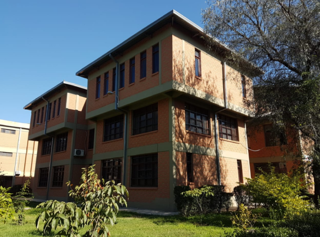
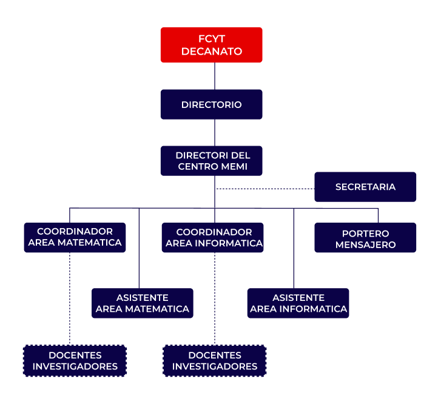
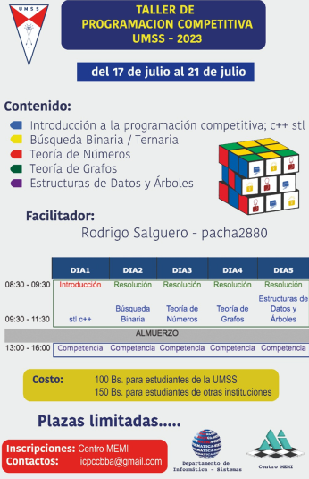
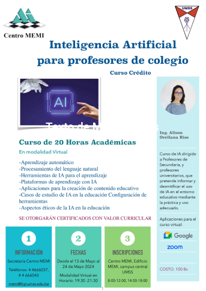
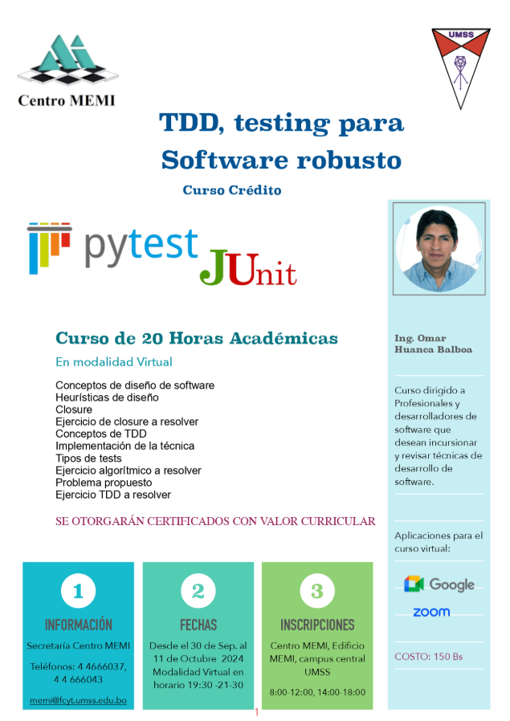

CENTRO MEMI
El Centro MEMI (Mejoramiento de la Enseñanza de la Matemática e Informática) de la Universidad Mayor de San Simón (UMSS) es una unidad académica institucional que se dedica a promover y fortalecer la calidad educativa en matemáticas e informática. A través de cursos, seminarios, asesoramientos y publicaciones especializadas, el MEMI brinda apoyo tanto a docentes universitarios como a profesores de colegio. Asimismo, ofrece servicios de actualización profesional, organiza eventos académicos y facilita la difusión del conocimiento mediante recursos pedagógicos de apoyo.
MISIÓN
Brindar cursos especializados, asesoramiento y elaboración de textos de apoyo a profesionales de las áreas de Matemáticas e Informática tanto de Universidad como de Colegio, orientados al mejoramiento de su enseñanza y aprendizaje.
VISIÓN
Ser un Centro de apoyo de referencia en la enseñanza de la Matemática y la Informática en nuestra comunidad, tanto para profesionales universitarios, profesores de colegio y estudiantes.
VALORES
Nuestros valores son:
- Respeto
- Colaboración
- Compromiso
- Responsabilidad
- Confianza
- Trabajo en equipo
- Espíritu crítico
- Innovación
- Creatividad
ACERCA DE
Antecedentes
En enero de 1991 inició sus actividades el Programa de Mejoramiento de la Enseñanza de la Matemática e Informática (MEMI), con el objetivo de mejorar la educación en las áreas de Matemática e Informática de la Facultad de Ciencias y Tecnología en la Universidad Mayor de San Simón. El Proyecto cubrió tres áreas: Matemáticas a nivel universitario, Matemáticas a nivel ciclo medio e Informática a nivel universitario. La segunda fase del Programa MEMI abarca el período 1994-1997, en la cual se destacan los primeros posgrados de San Simón, en áreas de Matemática e Informática. Finalmente, la tercera fase abarca el período 1999-2003. Su tarea fundamental, en base al compromiso asumido con los cooperantes holandeses (NUFFIC y la Universidad de Utrecht), fue garantizar la sostenibilidad de las actividades de este Programa. A partir del 2010, mediante Resolución Rectoral N° 389/10, el Programa MEMI adopta la denominación de Centro de Mejoramiento de la Enseñanza de la Matemática e Informática (Centro MEMI).
Datos Historicos
Desde su consolidación como Centro MEMI en 2010, la institución ha fortalecido su carácter académico y científico dentro de la Facultad de Ciencias y Tecnología de la UMSS. A partir de esa fecha se reorganizó en tres laboratorios especializados: Educación Científica, TIC's y Multimedia y Modelización y Simulación Virtual, con el fin de diversificar sus líneas de investigación y enseñanza.
Entre los hitos más relevantes se encuentran:
- 2011-2013: Implementación de plataformas educativas virtuales y desarrollo de programas de formación en tutoría virtual.
- 2014-2018: Innovación pedagógica en la enseñanza del cálculo, el diseño de laboratorios virtuales de programación y proyectos de inclusión digital.
- 2019-2020: Participación en proyectos internacionales como SELI (Smart Ecosystem for Learning and Inclusion) y la TDT Educativa, enfocados en educación inclusiva y tecnologías de aprendizaje.
- Actualidad: Consolidación como espacio de investigación, formación y difusión académica en Matemática e Informática, apoyando a docentes, estudiantes y la comunidad en general.
Autoridades
Director Centro MEMI
Mgr. Kirt Rolando Jaldín Rosales
Coordinador Área Matemática
Mgr. Luis Roberto Zegarra Dorado
Coordinador Área Informática
Mgr. Jorge Orellana Araoz
Organigrama
CURSOS / SEMINARIOS
SEMINARIO DE TDD 2023
30/09/2024
SEMINARIO DE IA 2023
13/05/2024
TALLER DE PROGRAMACION 2023
17/07/2023
PUBLICACIONES
Formulario de Trigonometria
Este documento presenta una recopilación de ejercicios de temas como aritmética, geometría y trigonometría, diseñado como material de referencia para estudiantes.
Texto de Matemáticas
Texto de Introduccion a la Programacion
SERVICIOS
Cursos de formación para profesores de Colegio
Enseñando a enseñar en las áreas de Matemáticas y Computación, con un enfoque práctico y basado en las nuevas tecnologías de información y comunicación, respetando los lineamientos educativos para secundaria, pero con una proyección de utilidad para la transición de alumnos Colegio - Universidad.
Cursos de actualización para profesionales
Orientado a la actualización de profesionales egresados de las carreras de Matemáticas, Informática y Sistemas, además de otras carreras, en tecnologías informáticas emergentes o de tendencia. Todos los cursos con valor curricular para los participantes.
Asesoramiento en la enseñanza de las Matemáticas y la Informática
Brindamos asesoramiento y seguimiento a profesores de secundaria y docentes universitarios de las áreas de Matemáticas e Informática en métodos, técnicas y herramientas pedagógicas que mejoren su práctica docente y el aprendizaje significativo de sus estudiantes.
Conferencias, seminarios especializados
Facilitamos nuestros ambientes e infraestructura para conferencias, seminarios, talleres, conversatorios con profesionales destacados locales o extranjeros, que quieran compartir sus experiencias y conocimientos con profesionales y estudiantes de nuestra universidad. Disponemos de dos salas con capacidad de 40 personas cada una, equipados con: data display, pizarras, porta banderas, etc.
Alquiler de ambientes
Disponemos de dos ambientes cómodos para defensas públicas, cursos, seminarios, talleres, de carácter privado, con todo el equipamiento para el éxito de sus eventos.
ICPC UMSS
El Centro MEMI acoge en su infraestructura al ICPC UMSS